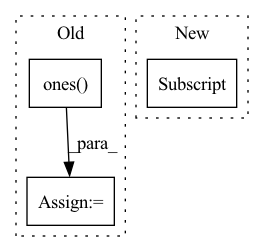

Pattern ID :2869
Before Change
mask_value = max_neg_value(dots_text)
i, j = dots_text.shape[-2:]
mask = torch.ones( i, j, device = device) .triu_(j - i + 1).bool()
dots_text.masked_fill(mask, mask_value)
attn_text = dots_text.softmax(dim = -1)After Change
mask = default(mask, lambda: torch.ones(b, text_len, device = device).bool())
x = F.pad(x, (0, 0, 0, padding), value = 0)
mask = mask[:, :text_len]
// derive queries / keys / values
qkv = self.to_qkv(x).chunk(3, dim = -1)In pattern: SUPERPATTERN
Frequency: 3
Non-data size: 3
Instances Fragment ID: 9545873
Project Name: lucidrains/dalle-pytorch
Commit Name: c27f48c4373942167a0cc2ac2238f67af2479fe3
Time: 2021-02-14
Author: lucidrains@gmail.com
File Name: dalle_pytorch/attention.py
M Class Name: SparseAxialCausalAttention
N Class Name: SparseAxialCausalAttention
M Method Name: forward(3)
N Method Name: forward(3)
M Parent Class: nn.Module
N Parent Class: nn.Module
M File Name: dalle_pytorch/attention.py
N File Name: dalle_pytorch/attention.py
M Start Line: 191
M End Line: 241
N Start Line: 201
N End Line: 259
Before Change
// point_features_list.append(pooled_features.view(batch_size, num_keypoints, -1))
point_features_list.append(pooled_features)
if self.model_cfg["add_ego_mask_feature"]:
ego_mask = torch.ones( (len(new_xyz), 1), device=point_features_list[0].device)
ego_mask[new_xyz_batch_cnt[0]:] = 0
point_features_list.append(ego_mask)
point_features = torch.cat(point_features_list, dim=1)After Change
point_features_list = []
if "bev" in self.model_cfg["features_source"]:
point_bev_features = self.interpolate_from_bev_features(
keypoints[..., :3], batch_dict["processed_lidar"] ["spatial_features"], batch_dict["batch_size"],
bev_stride=batch_dict["processed_lidar"]["spatial_features_stride"]
)
point_features_list.append(point_bev_features[kpt_mask]) Fragment ID: 9545872
Project Name: derrickxunu/opencood
Commit Name: c7ecf237666697c93ad84b5d271c16e133ac8ccb
Time: 2022-04-01
Author: yunshuang.yuan@ikg.uni-hannover.de
File Name: opencood/models/sub_modules/vsa.py
M Class Name: VoxelSetAbstraction
N Class Name: VoxelSetAbstraction
M Method Name: forward(2)
N Method Name: forward(2)
M Parent Class: nn.Module
N Parent Class: nn.Module
M File Name: opencood/models/sub_modules/vsa.py
N File Name: opencood/models/sub_modules/vsa.py
M Start Line: 217
M End Line: 289
N Start Line: 196
N End Line: 293
Before Change
batch, permutation_dim, -1
)
combined_embedding = self.combining_function(trial_embeddings, dim=1)
trial_counts = torch.ones( batch, 1, dtype=torch.float32) * permutation_dim
// otherwise we need to loop over the batch to account for varying trial lengths
else:After Change
// Get number of trials from non-nan entries
num_batch, max_num_trials = x.shape[0], x.shape[self.aggregation_dim]
nan_counts = (
torch.isnan(x)
.sum(dim=self.aggregation_dim) // count nans over trial dimension
.reshape(-1)[:num_batch] // counts are the same across data dims
.unsqueeze(-1) // make it (batch, 1) to match embeddings below
)
// number of non-nan trials Fragment ID: 9545867
Project Name: mackelab/sbi
Commit Name: 3831fd6d5fda0ca050db8c54868ed30558451042
Time: 2023-03-01
Author: jan.boelts@tum.de
File Name: sbi/neural_nets/embedding_nets.py
M Class Name: PermutationInvariantEmbedding
N Class Name: PermutationInvariantEmbedding
M Method Name: forward(2)
N Method Name: forward(2)
M Parent Class: nn.Module
N Parent Class: nn.Module
M File Name: sbi/neural_nets/embedding_nets.py
N File Name: sbi/neural_nets/embedding_nets.py
M Start Line: 274
M End Line: 300
N Start Line: 279
N End Line: 306